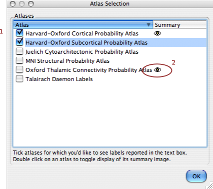

|
The atlas selection dialog allows you to choose which atlases you want to report labels from and which ones you'd like to see a summary image for. Tick each atlas(1) you'd like to see labels from. Double click on an atlas to have its summary image displayed - indicated by the small eye icon(2) in the "Summary" column. |
 |